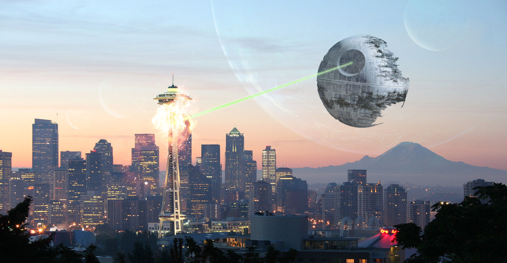

Good God, consider living on another planet.
It looks like you've happened upon the absolute worst conditions humanly possible for a Seattle commute. This isn't a rare occurrence, you're just extremely unlucky to have planets align for this unspeakable catastrophe. Traffic is beyond unspeakable. The only comparison you can make is to Jakarta, Indonesia. Don't even consider leaving your vehicle; there's so little room that not even microbes could make it through. The weather is so horrifying that you could swear you were in a Roland Emmerich movie. Rain is insurmountable and the destination of your commute is now a small ocean. Mt. Rainier has decided that today is the day for a show, the fault lines have all gone at once, and there are mass protests for absolutely everything in the current American political scene happening all at the same time throughout the city. The only place you will reach on this commute is your grave. Move to another planet.

Image credit: Reddit User Udub9